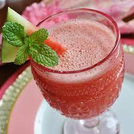

Watermelon Delight

Description
This recipe makes two delicious watermelon delights - a sweet, cold
beverage that's as easy to make as it is fun to drink!
Ingredients
- 2 cups cubed seeded watermelon
- 6 ice cubes
- 2 tablespoons honey
Steps
- Blend watermelon, ice cubes, and honey in a blender until smooth.